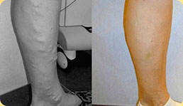

lába egészsége és szépsége érdekében VARIKÓZ NÉLKÜL!
és felhasználásra vonatkozó
jóváhagyással rendelkezik
- Garantált hatás
- Természetes összetevők
- Egyedülálló technológia
5 csomag maradt akciósan!
az akció végéig maradt még
Lábai egészsége és könnyűsége a „Varicobooster” krémbalzsammal!

- Kitűnő szer a
visszérbetegség megelőzésére
és kezelésére - Stimulálja a normál
vérkeringést - Gyorsan megszünteti
a lábfáradás tüneteit - Nedvesíti
és táplálja a bőrt
A „Varicobooster” krémbalzsam ereje egyedi összetételében rejlik, egyesítve magában mindent, ami a visszérbetegség eredményes kezeléséhez és a lábbőr széppé és egészségessé tételéhez szükséges!
Troxerutin
- megszünteti a nehéz
és fáradt lábérzetet - csökkenti a kapilláris erek
áteresztőképességét és merevségét - megszünteti az ödémát
és a gyulladást
Fehér vadgesztenye és
nyírfalevél
- erősítik és rugalmassá
teszik az érfalakat - kiküszöbölik a bőr
mikroszkopikus sérüléseit - megszüntetik a fájdalmat, az ödémát
és a fáradságérzetet a lábban
Citrom-éterolaj,
szója- és
kókuszolaj
- dezodorálnak és
megszüntetik az izzadtságot - megszüntetik a szárazság- és
szorítás érzetet - mélyre hatóan nedvesítik és
táplálják a lábbőrt
Üröm, mentol,
kamilla és csalán
- könnyűséget és erőt
kölcsönöznek a lábnak - frissítik és
fertőtlenítik a lábbőrt - gyorsítják a mikro
repedések begyógyulását
Koffein, MÉZ és
ginkgo-biloba
- óvatosan ápolnak és
tónust kölcsönöznek - stimulálják a véráramlást
- aktiválják a szövetek
anyagcseréjét - gyorsítják a sejtek
megújulását
A „VAROCBOOSTER” KRÉMBALZSAM RENDSZERES HASZNÁLATA
néhány hét elteltével ránézésre láthatóan csökkennek jelei!
100% -os gyógyhatás
Az áru tanúsítására EU, a FÁK területén, a klinikai kísérletekre pedig az MTA-ban került sor
Érezhető javulás már másfél heti balzsamhasználat után! Kipróbálná?
-

«A krémbalzsam sikeresen kitakarítja a lábon lévő vénás hálókat. Alkalmazása után észrevehető könnyűség jelenik meg, elmúlnak a sajgó érzések és a szorító érzés».
Anasztázia, 45 éves
-

«Munka után állandóan használom a „Varicobooster” krémbalzsamot. Gyorsan megszünteti az ödémát, a fáradtságot, jelentősen csökkent a lábfej izzadása is. Reggel a lábaim teljesen kipihentnek érzem.
Mindenkinek ajánlom!»Jevgenyij, 35 éves
-

«A „Varicobooster” krémbalzsam” egyszerűen megmentett engem. Már minden nap használom. Már néhány héttel azután, hogy használni kezdtem, a vénás hálók jelentős összehúzódását tapasztaltam, a lában gyorsabban jön rendbe, érződik a könnyűség és az energia.»
Julija, 35 éves
Könnyű meggyőződni a „Varicobooster”
krémbalzsam hatásosságáról!
A készítmény rendszeres alkalmazása már másfél hét elteltével látható jelét adja a visszérbetegség tünetei javulásának. Táplálja és ionizálja a lábbőrt, kiküszöbölik a repedéseket és a mikroszkopikus sérüléseket.
Meggyőződéssel lehet állítani, hogy a balzsam tartós alkalmazása a visszérbetegség legjobb megelőzési és gyógyítási módszere!
Ilyen hathatósságot és gyors hatást a „Varicobooster” krémbalzsam természetes összetevői adnak. A termék alá van vetve minden szükséges laboratóriumi kísérletnek és teljesen veszélytelen a fogyasztó számára. Az eredmény garanciáját az egész világból érkező több ezer pozitív visszajelzés támasztja alá!
Az ön lábai szépségét és egészségét megbízhatóan védik a ”Varicobooster” krémbalzsam természetes összetevői.
A „Varicobooster” krémbalzsam tanúsított termék, és megfelel minden minőségi szabványnak. Óvakodjon a hamisítványoktól! A „Varicobooster” krémbalzsam eladása CSAK eredeti csomagolásban történik!
A ”Varicobooster” krémbalzsam hatásosságát az
egész világból érkező több ezer pozitív visszajelzés bizonyítja és erősíti meg!
rendeljen most
A szakember véleménye
A szebbik nem képviselőinek közül igen soknak, mellesleg a sok férfinak is, ismerős a nehéz súly és fájdalom érzése a lábban. Gyakran akkor fordulnak szakemberhez, amikor a betegség előrehalad, és ránézésre megállapíthatók a visszérbetegség egyértelmű tünetei. Mint bármely orvos, én is úgy vélem, hogy a betegség gyógyításának legjobb eszköze a megelőzése. Saját betegeimnek éppen a „Varicobooster” krémbalzsamot ajánlom.
Kitűnően birkózik meg a vénák visszértágulásának már látható jeleivel, és figyelmeztetni tud a betegség megjelenésére. E fontos tulajdonságok mellett a krém még nagyszerű nyugtató, frissítő és dezodoráló hatással is rendelkezik. A ”Varicobooster” krémbalzsam gyorsan és könnyen megszabadítja önt a „fáradt” láb hatásától, könnyűséget és erőt ad a munkanap végén.
Nem káros?
A „Varicobooster” krémbalzsam» teljes egészében természetes összetevőkből áll, nem tartalmaz parabéneket, színezőanyagokat, szintetikus aromát és GMO terméket. A termék be lett vizsgálva és nincs ellenjavallat.
A kezelés menete
A kezelés hossza és hatásossága egyénenként változó, és egyenesen függ a betegség kifejlődésének fokától. A krémbalzsam átlagos alkalmazási ideje, ami után a hatás már szemmel észrevehetővé válik, másfél-két hét.
Hol lehet megvenni?
EU, Oroszország és a FÁK területén a „Varicobooster” krémbalzsam egyetlen hivatalos szállítója a mi társaságunk. Csak valódi „Varicobooster” terméket vásároljon!
A krémbalzsam minden csomagja árujeggyel és egyedi regisztrációs kóddal van ellátva.
Kiszállítás
4-7 nap a megrendeléstől számítva
Hogyan lehet megrendelni a „Varicobooster” krémbalzsamot
- Töltse ki lentebb
a megrendelőt - Várja meg munkatársunk hívását
- Fizesse a „Varicobooster” krémbalzsamot tartalmazó küldeményt a postán való átvételkor vagy a futárnál
Boldog órák
ÉJJEL NAPPAL DOLGOZUNK!